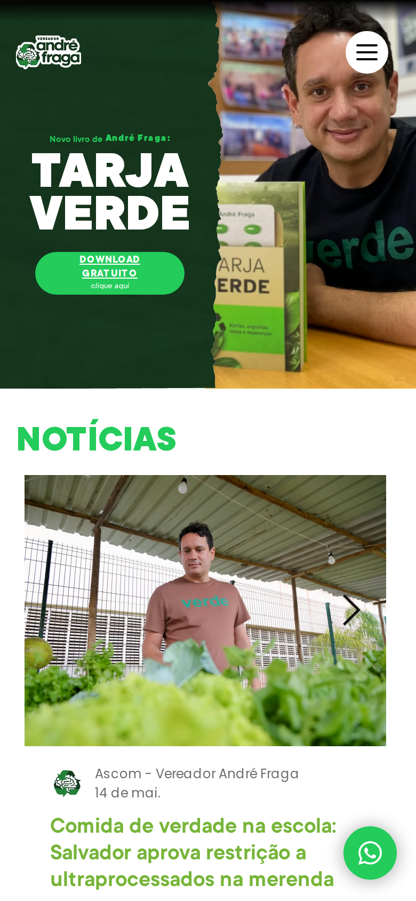
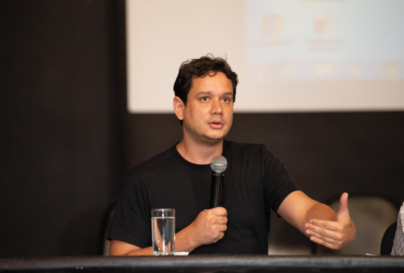

Aplicativo mobile do gabinete do vereador André Fraga (PV · Câmara Municipal de Salvador). Desenvolvido pela MVP em parceria com DC Consultoria — nativo iOS e Android, lançado em abril de 2024.

Interface do site do mandato — visualização mobile

"É mais uma ação unindo sustentabilidade e inovação. Queremos tornar Salvador uma cidade cada vez mais verde, e para isso precisamos que as pessoas se conectem de forma mais fácil ao mandato."
— Vereador André Fraga, ao apresentar o aplicativo Mandato André Fraga em abril de 2024.
O app foi lançado com 30+ Projetos de Lei e 100+ Indicações apresentados pelo vereador, integração com redes sociais e cadastro do programa ODS nas Ruas. Serviu como ferramenta viva do primeiro triênio de mandato — alinhado aos 17 Objetivos de Desenvolvimento Sustentável da ONU.
Nota: o aplicativo foi posteriormente retirado das lojas Play Store e App Store. O portfólio preserva o histórico do projeto entregue.
Pautas de acesso universal no espaço público e nos serviços da cidade.
Mobilidade ativa, ciclofaixas e integração com transporte coletivo.
Urbanismo verde, áreas de convivência e infraestrutura resiliente.
Adaptação de Salvador ao cenário de mudanças climáticas.
Tecnologia a serviço da cidade e do cidadão. O app é parte disso.
Cidade que promove qualidade de vida e cuidado com a população.
Build, revisão App Store, distribuição integral. Notificações push com APNs.
Build, revisão Play Store, distribuição integral. Notificações push com FCM.
Auth, Firestore, Cloud Functions. Integração com Instagram, Facebook, LinkedIn.
Interface para a equipe do gabinete publicar PLs, indicações e notícias.
A MVP entrega app nativo iOS e Android, aprovado nas duas lojas, com backend integrado ao site do mandato e painel de gestão para a equipe. Do wireframe à App Store.